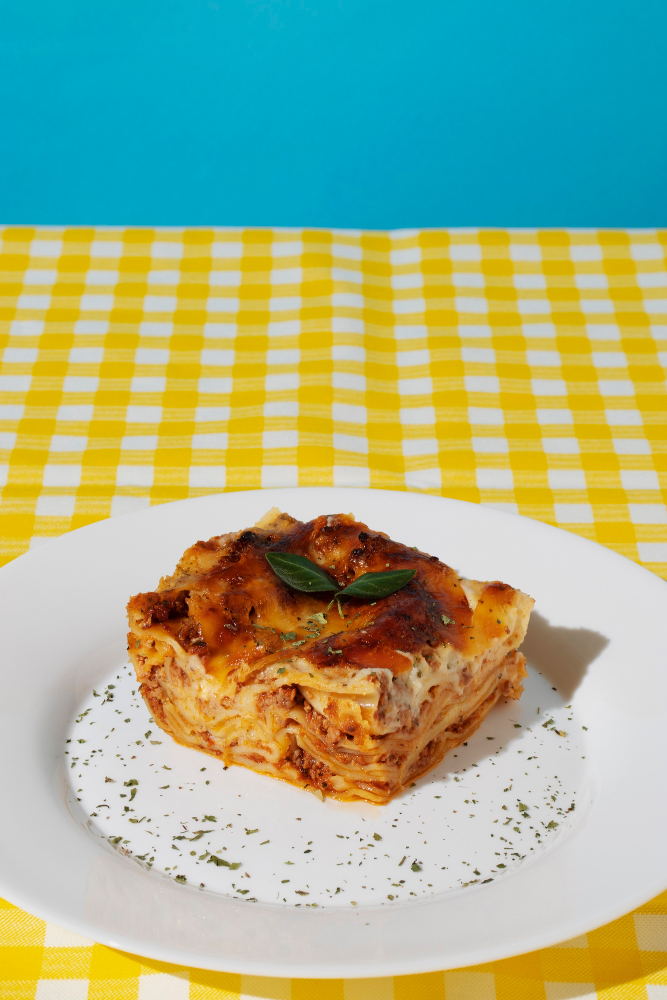

Lasagne

Beschreibung
Hier verrate ich Dir mein Geheimrezept für ein Lasagne a la bolognese.
Zutaten für 4 Personen
- 1 Liter Bolognesesauce
- 1 Liter Bechamelsauce
- Lasagneplatten
- Käse zum Überbacken
- etwas Butter
Zubereitung
- Bolognesesauce und Bechamelsauce zubereiten. Das kann auch gut vorbereitet werden.
- Lasagne in einer gebutterten Auflaufform schichten: Zuerst etwas Bolognesesauce, dann Lasagneplatten, Bolognesesauce,
Bechamelsauce und so weiter, bis die Saucen aufgebraucht sind (ca. 3-4 Schichten). Mit einer Schicht Bechamelsauce abschließen.
- Den Käse zum Überbacken darüberstreuen und einige Butterflocken auf der Lasagne verteilen.
- Die Lasagne bei 200 Grad Ober-Unterhitze backen, bis der Käse goldbraun ist. Das dauert ca. 45 Minuten.
- Aus dem Ofen nehmen und vor dem Anschneiden zehn Minuten ruhen lassen.
Dazu passt ein grüner Salat. Guten Appetit!
Zurück zu all meinen Lieblingsrezepten